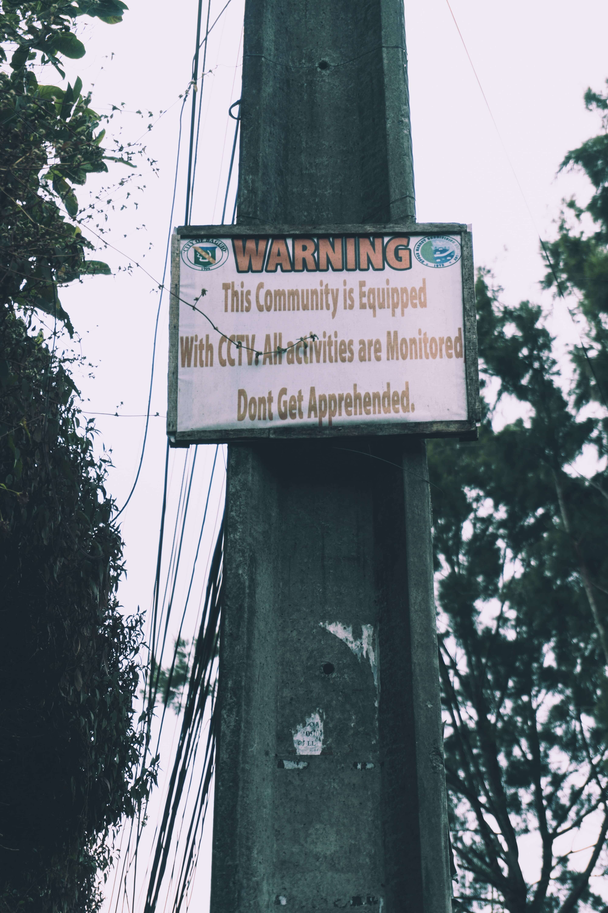
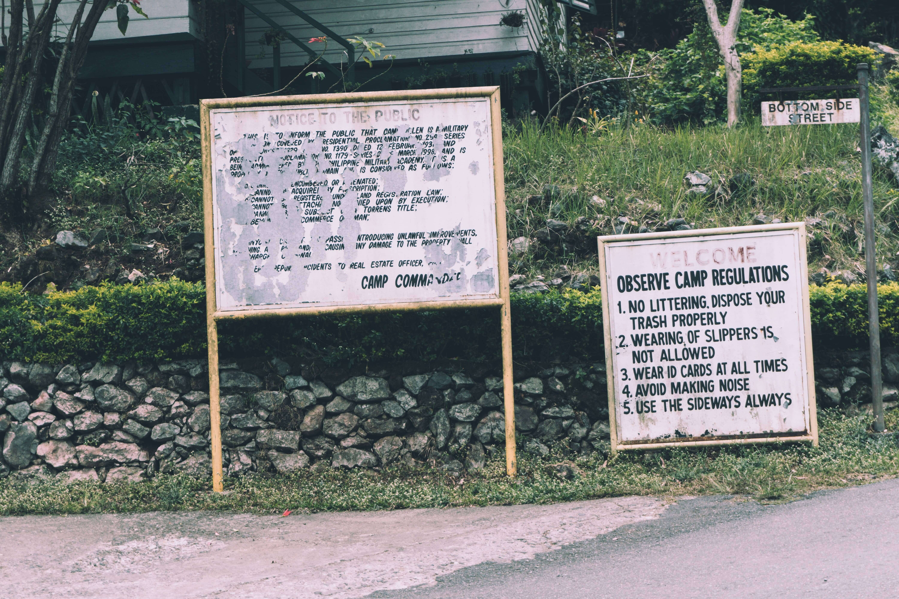
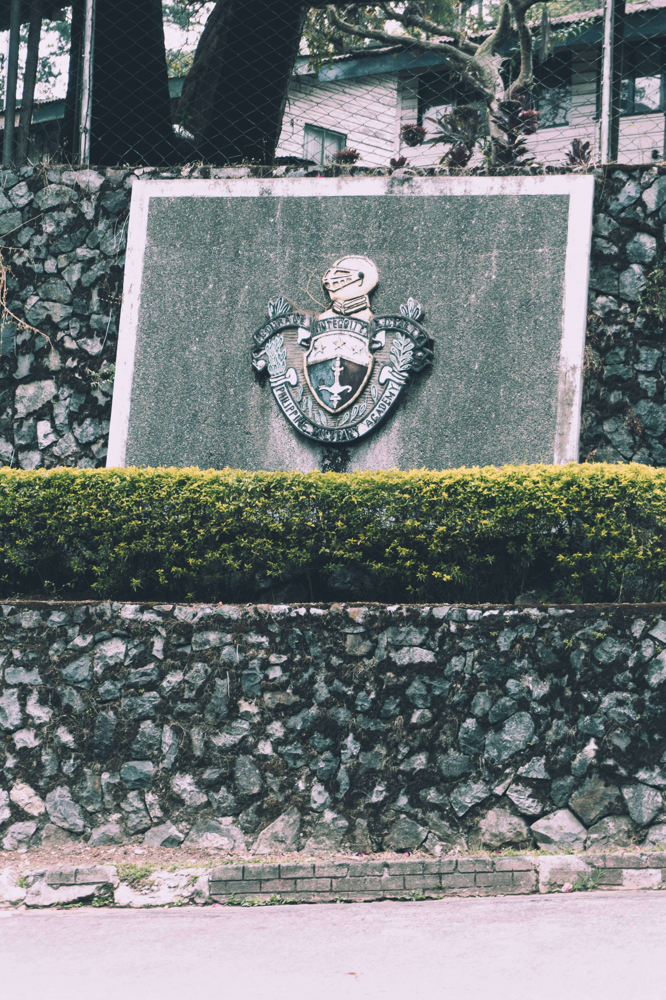
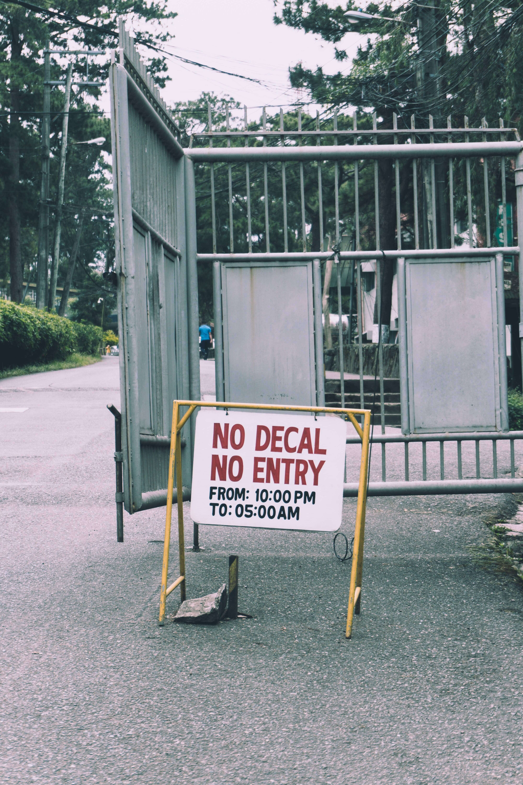

Aside from having CCTV cameras, barangay Camp Allen have activities regarding crime prevention control it includes law enforcement activities where BCPO have maintained/pacify peace and order and monitor unscrupulous act of somebody from the past years up to the present. This activity was conducted by police officers from station 7 BCPO 2-3 times a week (all year grounded) wherein police officers conduct patrolling around the barangay. To also maintain peace and order to youth offenders or any DSWD offenders this includes youth who are under alcoholic intoxication, barangay Camp Allen has a program/project activity on counseling to youth offenders by the barangay council. Cigarette smokers who are caught smoking in public places by the station 7 police officers will be advised. They also conduct counterinsurgency and anti-terrorism wherein the barangay advises all real estate lessor to register all their borders in the barangay. They also advise all constituents to be vigilant at all times, if they observe an unfavorable act of anyone they will report to the authorities wherein the past year crime incidents decreased according to the barangays peace and order and public safety plan accomplishment report of CY 2016. Another activity that the barangay conduct to maintain peace and order was fire prevention and suppression seminars wherein the citizens of the said barangay attended the seminar to prevent fire incidences. Other details about the peace and order of barangay Camp Allen is that the nearest police station was BCPO station 7 and the distance from the fire station is 0 km just below barangay Camp Allen's gate. In barangay Camp Henry T. Allen barangay tanods also plays a big role in peace and order some of their roles include: (1) They monitor and check the nefarious activities of criminal elements (2) They identify barangay constituents with strong deviant behavior for referral to appropriate authorities They maintain continuing dialogue, close coordination, and rapport with the higher levels of the public safety councils in their area of responsibility (3) They monitor coordinate and supervise the operation of all community-based anti-crime movements within the barangay and more.
1. BCPO station 7 patrolling around the barangay -law enforcement activities where BCPO have maintained/pacify peace and order and monitor unscrupulous act of somebody. Conducted 2-3 times a week 2. Advise the entire real estate lessor to register all their boarders in the barangay to counter insurgency and anti-terrorism. -in order to decrease crime incidents 3. Strengthen the BDRRM committee through trainings in order to manage disaster and control. -awareness and preparedness of barangay officials, tanods, and volunteers on fire training and First aid training 4. ARROW- Anti Road Obstruction -strictly implements no parking on public roads and dual parking that can block roadway of land transportations Community Problems, Issues, and Concerns 1. Land issues 2. Availment of city service (water and electric connection) 3. Garbage segregation 4. Health issues (Dengue, Mal-nutrition, Common Illness) 5. Peace and Order